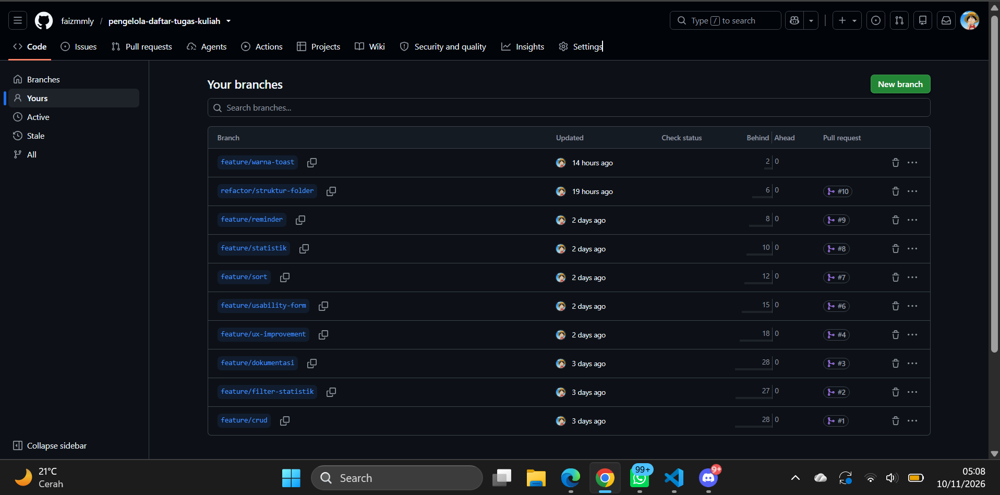
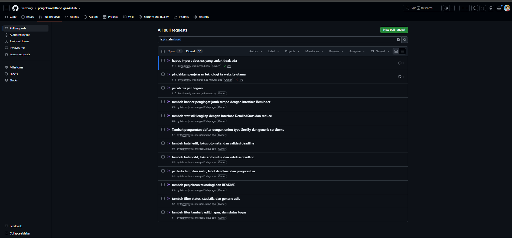
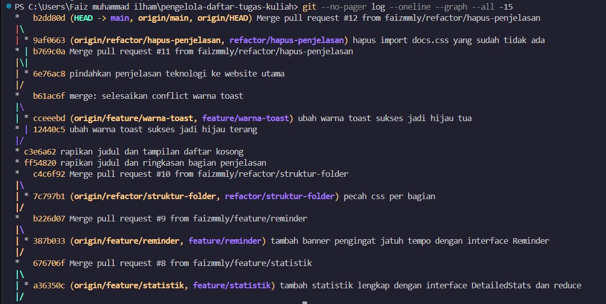
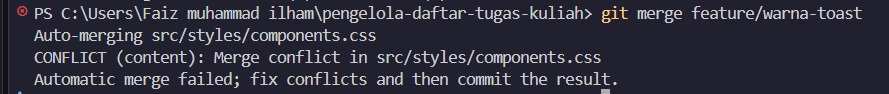
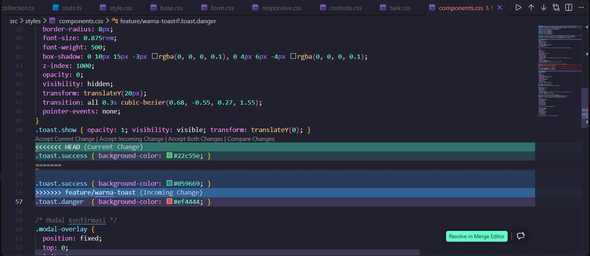
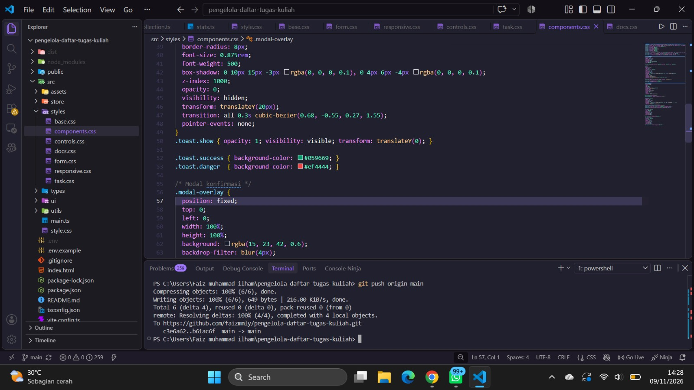

← Kembali ke Week 06
Bukti Penggunaan Git dan GitHub
Repository: github.com/faizmmly/pengelola-daftar-tugas-kuliah

1. BranchDaftar branch fitur yang dibuat terpisah dari main.

2. Pull RequestPull Request yang sudah berstatus Merged.

3. MergeRiwayat commit dan penggabungan branch (git log --graph).

4. Conflict: terminalGit melaporkan conflict di components.css saat merge.

5. Conflict: editorPenanda <<<<<<<, =======, >>>>>>> pada baris yang sama di dua branch.

6. Conflict: selesaiSatu versi dipilih, penanda dihapus, lalu di-commit sebagai merge.